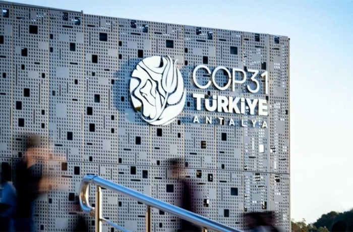
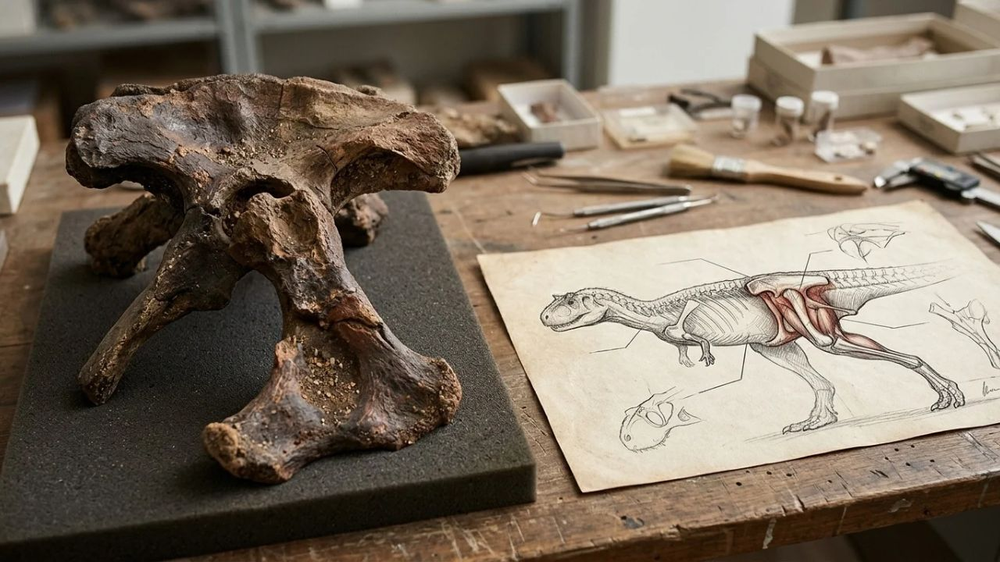
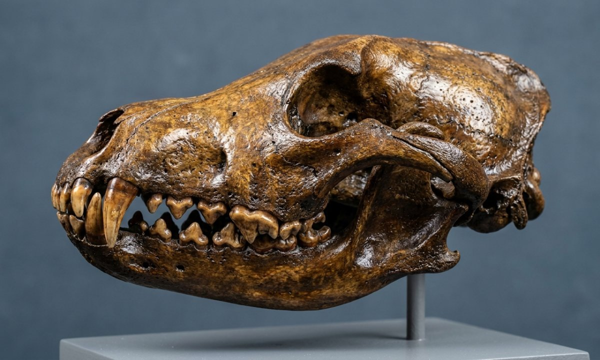

Notícias por nicho
Atualizado em 18/11/2026 às 04:56 (horário de Brasília)
Nichos: Corinthians, Movimento Brasil Livre, Paleontologia, Inteligência Artificial

Corinthians
Corinthians aciona a Justiça com pedido de tutela cautelar para renegociar dívidas de R$ 2,8 bilhões
Ler resumo

Inteligência Artificial
Brasil formaliza adesão ao Compromisso de Antália sobre Inteligência Artificial durante a COP31
Ler resumo

Movimento Brasil Livre
Instituto fundado por ex-integrantes do MBL prepara jovens para embates políticos nas redes
Ler resumo

Corinthians
Corinthians e Botafogo se enfrentam pela 35ª rodada do Brasileirão na Neo Química Arena
Ler resumo
Corinthians
Corinthians finaliza treinos e tem quatro desfalques confirmados para encarar o Botafogo
Ler resumo

Inteligência Artificial
Banco Central alerta para uso de inteligência artificial por organizações criminosas no sistema financeiro
Ler resumo
Paleontologia
Museu de Paleontologia em Santana do Cariri recebe concerto da Orquestra Contemporânea Brasileira
Ler resumo

Paleontologia
Fósseis da Bacia Bauru impulsionam a paleontologia e revelam novas espécies em Monte Alto
Ler resumo

Paleontologia
Fósseis de lobos-terríveis em poços de asfalto na Califórnia fornecem acervo histórico para a paleontologia
Ler resumo